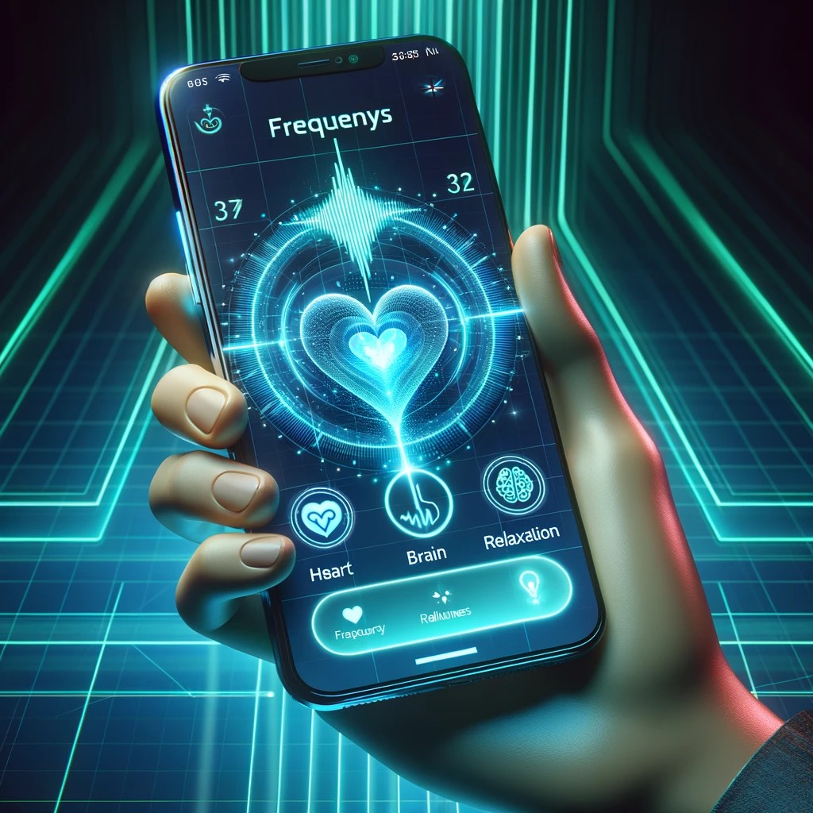

Sobre o FrequenSys
Frequências para saúde e bem-estar, transmitidas diretamente via satélite. Escolha o que precisa e experimente uma nova era de cuidado.
Pessoas Usando o FrequenSys


Veja como o FrequenSys está transformando a vida de muitas pessoas ao redor do mundo.